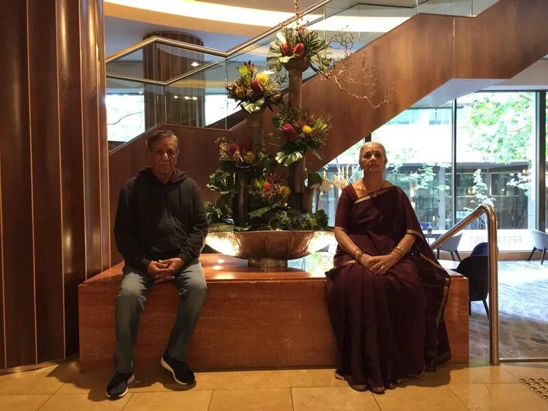
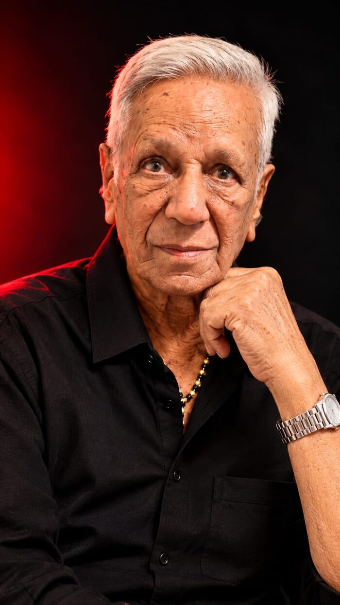
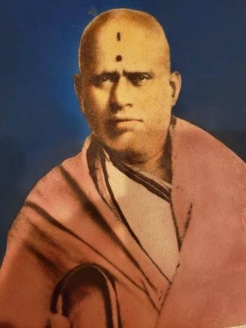
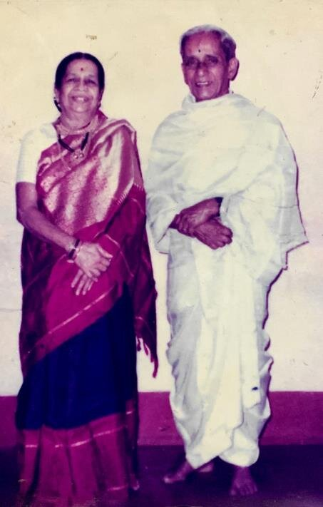
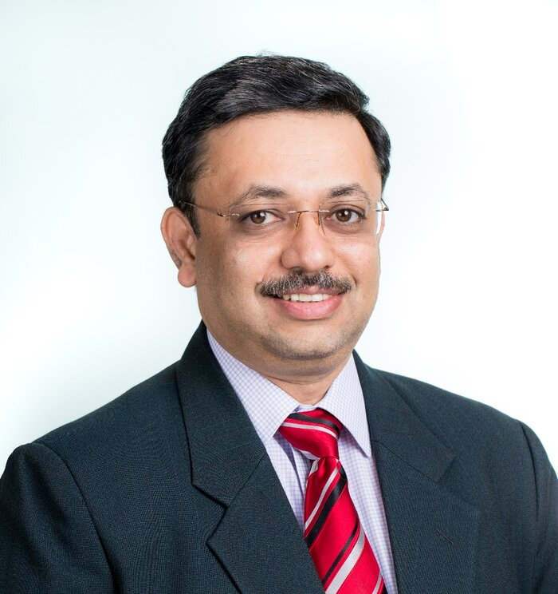

“Ātmano mokṣārthaṁ jagaddhitāya ca”: for one’s own liberation, and for the welfare of the world.
Teachers, engineers, public servants and sportspeople: the people behind our founder’s journey
Prologue
Every great journey begins with a single step, taken because someone touched, moved and inspired a life. For me, those people are a few remarkable men and women.
My grandfather, Sri V.S. Ramacharya, was the civil engineer who built the Indian Institute of Science in Bengaluru, and he served it until he retired as its Chief Engineer. He built great dams that still serve the people of South India, and he carried some of the country’s most used state and national highways through the Vindhyas and the ghats of the south, often in remote country and in the hardest of conditions. My father, Mr. V.R. Raghavendra, was a gifted cricketer and an even finer human being. My mother, my sister, my wife and my grandmothers shaped me with their quiet strength. I never knew my maternal grandfather, but his family’s values reached me all the same. My great-grandfather, Pujya Sri V. Shamacharya, served the Mysore court of the Wadiyars as a scholar, teacher and advisor.
Each of them left an indelible mark on me and on what we are building. I may be its founder, but my father has always been my backbone. His words, written with my mother, follow.
Sanjay R Acharya
Chapter I
Mr. VR Raghavendra and Mrs. Meera R, Chairpersons Emeritus


Dear friends, partners and members of the Ajan HFL family and the wider group,
When we look at what AHFL has become, we feel deep gratitude. What began as a family's belief in learning, honest work and service has grown into a group with more than 30 activities across many sectors. We are working to grow that to 50.
From energy to learning, each activity has its own work, but they all share one purpose: to create lasting value for people and communities. A new venture is not only a business. It creates jobs, builds skills and gives families the chance to build a better life. We ask our teams to remember that behind every number there are people who depend on us.
Growing from 30 activities to 50 will need discipline as much as ambition. We ask every new venture to hold the same standards as the first: quality, fairness and care for the long term.
Every sector needs two kinds of people. Specialists bring deep skill in one field. Generalists see the whole picture and join the pieces together. We need both, and we ask you to respect and learn from each other.
To our teachers, trainers, counsellors and the people who run our schools and programmes: you shape lives. Specialists, bring your subject and your care for children with special needs and autism. Generalists, keep our learning places well run, safe and open to every ability. Learning will always be close to our hearts.
To our engineers, data and cloud specialists, and the field teams in our villages: you bring safe, smart and secure technology to the places that need it most. Specialists, make the technology simple and reliable. Generalists, work hand in hand with government schemes, foundations and village communities. Put the rural and the underserved first, always.
To our scientists, engineers and the managers of our space ventures: you work at the edge of what is possible. Specialists, aim high and test carefully. Generalists, manage capital, partners and timelines with patience. Space teaches humility, and we ask you to carry it with you.
To our traders, transport and contracting teams, and our finance professionals: you keep goods, money and promises moving. Specialists, master your trade and your numbers. Generalists, hold the businesses together and keep every partner's trust. A fair deal today brings a partner for life.
To our farmers, agronomists, livestock and fisheries experts, and the people who take crops to market: you feed people. Specialists, care for the soil, the animals and the sea. Generalists, build fair markets and stable incomes for farming families. Treat the land and nature which feeds us as you would treat your own mother.
To our coaches, facility managers and sports project teams: you build health, discipline and team spirit. Specialists, keep our grounds and programmes of the highest standard. Generalists, open them to young people from every background. Sport builds character, and character builds a nation. A nation with character befriends other nations.
To our doctors, scientists, digital and AI specialists in health: your work touches lives directly. Specialists, keep patient safety and good science above all. Generalists, turn good ideas into services people can reach and afford. Use every new tool, including AI, with care and honesty.
To the people who support our small businesses, trainers, certifiers and employers alike: small businesses are the backbone of the economy. Specialists, help owners and workers learn new skills as technology changes. Generalists, connect education, workers and employers so no one is left behind.
To our ICT engineers, network and device specialists, and digital teams: you connect people, places and machines. Specialists, build systems that are secure and dependable. Generalists, make sure the technology serves people and not the other way around.
To our plant managers, engineers, mining and processing teams: you make the materials the world depends on. Specialists, run every operation safely and efficiently. Generalists, plan for the long term and care for workers and neighbours. No target is worth an unsafe day.
To our water engineers, planners and project teams: water is life. Specialists, design and run our infrastructure so it lasts for generations. Generalists, work with communities and governments so clean water reaches every home. Waste not a single drop.
We are proud of the HFL Way. It asks us to act with honesty, to keep our promises, to treat every partner fairly and to care for every natural element, earth, water, air, fire and space, and for the people around our projects. These values have guided our family for many years, and we are happy to see the next generation carry them forward. So, in every transaction, in the marketplace and in the workplace, we ask you to put people before profits. Choose what is sustainable and repeatable over winning every opportunity. And put the customer's experience before a quick sale. Business built this way may grow a little slower, but it lasts, and it earns trust that no money can buy.
To Sanjay and Rachana: you have our full trust and our blessings. With our whole family, and in loving memory of those who came before us, we ask you and the whole leadership team to lead with humility, to decide with courage, and never to forget why we started.
To everyone who walks with us: to our authors, trainers, mentors, facilitators, academicians and advisors; to our learners, earners and alumni, and the parents and families who support them; to our customers and members; to our employees, their families, and our full-time, part-time, fractional and gig colleagues; to our technologists, specialists, generalists, professionals and vocational workers; to our consultants and specifiers; to the Industry 4.0 and Industry 5.0 competence developers who improve our people, spaces and processes across the workspace, the workflow and the workforce; to our farmers, artisans, field teams, and resilience and recreation workers; to our MSMEs, contractors, service providers and suppliers; to our partners, certifiers and employers; to the governments, regulators, foundations, NGOs and volunteers who work beside us; to the villages and communities who welcome our projects; and finally to the lenders and investors who gave us our start: thank you. We value your trust more than any contract, and we will work every day to deserve it, for you and for the generations still to come.
To our young colleagues: keep learning every day. In this 21st century ecosystem, the world of energy is changing fast, and curious, hard-working people will shape it.
May this work bring light, prosperity and well-being to all.
From the golden seed, all things are born.
What we sow with honest hands, the earth returns as fruit.
And every fruit we gather, we share, for the good of all the world.
May this work bring light, prosperity and well-being to all.
Hiranyagarbha Phalaprada Lokahitaya.
With warmth and gratitude,
Mr. VR Raghavendra & Mrs. Meera R
Chairpersons Emeritus, AHFL
Document means you can see the original on this page. Family record means the statement comes from the family’s own written records. We mark every statement so you can tell the two apart.
Chapter II
Great-grandfather · Mysore

The Acharya family has long served the court of Mysore as teachers and advisors. In our founder’s great-grandfather, that tradition took the form of scholarship. Pujya Sri V. Shamacharya, addressed in his correspondence as M.V. Shamachar, was a Sanskrit scholar honoured by the Maharaja of Mysore.
As part of the honour, the Maharaja of Mysore gifted him a large holding of land, some 25 villages around Mulbagal in today’s Kolar district, with a title close to that of a Palegar. Being of a scholarly disposition, he never interfered in the lives of the farmers, and neither did his children or grandchildren. Even before the land reform laws were enacted, Pujya Sri V. Shamacharya instructed his children to give the land to the farmers who worked it, and that was done. Sanjay remembers it this way: “As a growing boy, I saw with my own eyes how close the farmers were to our family, and how we stood by them in every drought, though we claimed no part of the land. They would come first to my grandfather. A retired civil servant by then, he would call all his sons together, and each would give what he could to build a water catchment for the dry months, so that the harvest would come and the villages could carry on. This went on for decades, until the government, through the Zilla Parishad, began tapping groundwater and sinking bore wells. Even now, when water runs short, we are there for them.”Family record
The family still shares a warm bond with the farmers of those villages. Their reverence runs so deep that, even today, a portion of the harvest is brought to the family’s doorstep at least twice every year.Family record
Whatever goodness goes around, comes around. This is the law of nature.
Sir Mirza Ismail was Dewan of Mysore from 1926 to 1941. In late 1931 he was in London for the Round Table Conference, which is why this letter is on London hotel paper.
Chapter III
Grandfather · Civil engineer, B.E. · Builder of the Indian Institute of Science

Ramacharya, called “Ramoo” by his brothers, was the engineer of the family. He was a Sanskrit scholar and a national-level histrionics champion, awarded a gold medal in an all-India competition, and a gold-medallist civil engineer from the University Visvesvaraya College of Engineering (UVCE), Bengaluru. He was honoured by the British government before Independence, and by the Government of India after it, for his stellar work in building the Indian Institute of Science, and later for the buildings he developed for the State Bank of Mysore and Canara Bank, and as adviser to Sri B.R. Manickam on the construction of the Vidhana Soudha in Bengaluru. The CPWD, which before Independence functioned under British resident engineers, honoured him with several recognitions, including gold medallions, the Queen’s Cross and silver trowels, for the dams, ghat-section roads and infrastructure projects he built across India. He led several other government projects, in particular dams and roadways, and held a very senior position in the Karnataka Housing Board, contributing to the master planning of Jayanagar and other well-laid-out districts of Bengaluru, including Malleshwaram.Family record His working life was spent building dams, roads and institutions, often in remote country and hard conditions. He was also a humanist, and the respect he earned from the communities he served was felt by his whole family.
In March 1929 a young civil servant at the Kolar Gold Fields wrote to his younger brother at college. He was glad to hear Ramoo had done “exceedingly well in the exam”, gave news of the family, and enclosed a cheque for five rupees, his brother’s allowance, trusting it would arrive in time.Document
The writer was Sri V. Vedavyasacharya, the eldest brother, who went on to become the first Collector of Mysore State after it joined the Republic of India and to work with Dr. Rajendra Prasad, the first President of India.Family record The student was Ramacharya, who would spend his life building dams, roads and institutions. Five rupees, sent with care from one brother to another, is where this story of service begins.
Our five-rupee promise. In honour of that brotherly love, young Indians preparing for examinations for government departments and public services begin their learning with HFL for just ₹5. Our fees after that stay within reach of every family, including those in our village adoption and village care programmes. Grants and donations are welcome. Where none come, HFL sponsors these young people at that rate itself, so that no one is kept from the education they deserve.
“Jayoo” is their brother Jayacharya. The cheque for Rs 5/- was Ramacharya’s allowance from his eldest brother.
The family records that Dr. Prasad entrusted him with work on the development of education in India, and that he advised the government on several occasions. As Chief Executive of the India Steamship Company he helped prepare the maritime strategy of newly independent India, and he worked alongside several of the nation’s great builders on foundational projects in nuclear science, medical science and education, among others.Family record
Both stones name Sri V.S. Ramacharya as Engineer-in-Charge and Sri B.R. Manickam as Architect, so the two men worked side by side on this IISc building. Sri B.R. Manickam (1909 to 1964) went on to be credited as chief architect of the Vidhana Soudha, whose foundation stone Prime Minister Jawaharlal Nehru laid on 13 July 1951 and which was completed in 1956 (The Economic Times, 5 October 2017).
The Hydraulic Research Laboratory was the department’s first building. It later housed a tilting flume 28 m long, 1.8 m wide and 1 m deep, described on the poster as the first of its kind in the Asia Pacific region. The Ministry of Water Resources, Government of India, is named on it as the funding agency.
In the same months of 1951, Sri V.S. Ramacharya and Sri B.R. Manickam were named together on the IISc foundation stone (Exhibit 4A): Engineer-in-Charge and Architect. The family records that Sri Ramacharya advised Sri Manickam on the design and construction of the Vidhana Soudha, and that, as an expert on its structural requirements, he surveyed and selected the stone quarry for the building.Family record Sources: The Economic Times, 5 October 2017; IASTE Working Paper Series, Vol. 341 (2025); Karnataka Legislature.
The family records that Sri V.S. Ramacharya served on the boards of the State Bank of Mysore and Canara Bank, and led the building of this head office and of their branches across Karnataka, including some 48 Canara Bank buildings.Family record
Ramacharya was one of seven children of Sri Shamacharya. The brothers went into civil service, law, teaching and engineering.Family record
The family records that the electrical engineer brothers, Sri Sripadarajacharya and Sri Narasimhamurthyacharya, helped write this handbook for the engineers of the electricity board.Family record
Chapter IV
Father · Cricketer, entrepreneur · with Mrs. Meera R
Ramacharya’s third son brought the family’s discipline to the cricket field. Bangalore newspapers followed his innings, and his scrapbook survives.
Chapter V
Founder · Chartered Electrical Engineer · Executive MBA

I was born into a large joint family. My parents were living with my grandparents with both my grandfather and father serving IISc when I arrived, and my first teachers were the homemakers on the IISc campus. I passed from one pair of caring hands to another, and through them I came to know a family of many callings: teachers, engineers, doctors, lawyers, bankers, public servants, sportspeople and artists.
Our home opened onto a close and generous neighbourhood. Ours was a simple life, rich in people rather than possessions. I could have breakfast at home, lunch with one neighbour and dinner with another, and nobody thought it unusual. The neighbourhood was my extended home.
Its elders gave me my first schooling in life. Nobody lectured me. I learned by watching how they worked, how they treated one another, and how they met good times and hard times alike with gratitude, tenacity and calm. They were cheerful, simple and friendly, they loved their work, and they leaned on one another. That quiet, rock-solid support taught me what community means.
I was a curious child, and I absorbed all of it. Long before I learned the words “leadership” and “ownership” at school, I had seen them practised around me every day. Decades later, I know that such lessons do not fade with time. They have become the principles I live by.
Work later took me across countries and roles. I have lived and worked in the UAE for more than two decades, in a country home to some 200 nationalities, and I have worked closely with people from more than 50 of them. Beneath very different cultures, I keep finding the same patterns I first saw as a boy. That curiosity led me to study cross-cultural management, including Geert Hofstede’s work on the cultural dimensions that compare values and behaviour across nations, and Pankaj Ghemawat’s CAGE framework on the distances between countries.
Working across cultures has convinced me that a well-designed experience can touch, move and inspire people of any age and background. What began as moments with the elders of my childhood has become a lifelong practice. As a coach, mentor and guide, I try to turn unstructured experience into a structure people can use every day, one in which learning becomes a habit. Our mantra is simple: Learn it to Earn it.
My passion is to help people and businesses build smart, safe, secure and sustainable careers and enterprises, and to help each person discover their true potential. I work by one principle, Touch, Move, Inspire, and I try to be the difference we wish to see in the world, building lasting relationships along the way.
Sanjay R Acharya
Seven ArTu K panels, rated from 400 A to 4,000 A, were tested in Arnhem against the new IEC 61439-2 standard for Middle East conditions. Sanjay was present for most of the testing.
Sanjay Raghavendra, ABB’s GCC technical manager, low voltage products division.
About these documents. Every letter, clipping and photograph on this page is a scan of an original kept by the Acharya family. Transcriptions follow the originals. Statements marked “Family record” come from the family’s own written records.